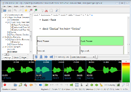
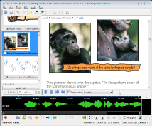

Content Transformation: Automated Tools & Interactive Authoring
December 6, 2011 (11am-12pm)
Romain Deltour & Daniel Weck
(DAISY Consortium)
Jernigan Institute,
200 East Wells Street, Jernigan Place,
Baltimore, MD 21230
Romain Deltour & Daniel Weck
(DAISY Consortium)
Content #1.
Content #2.
(10mn)
(15mn)
(5mn)
|
|
XML formats ⇄ interoperability |
|
|
|
|
  |
|
|